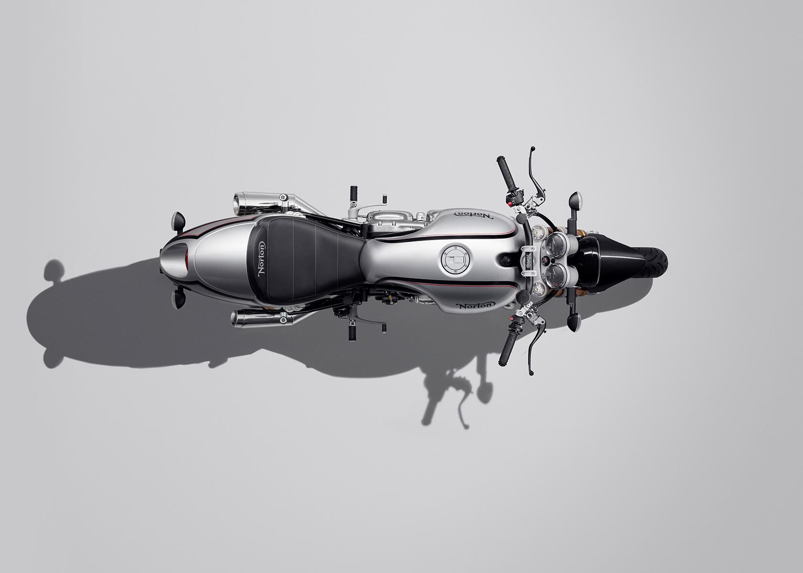
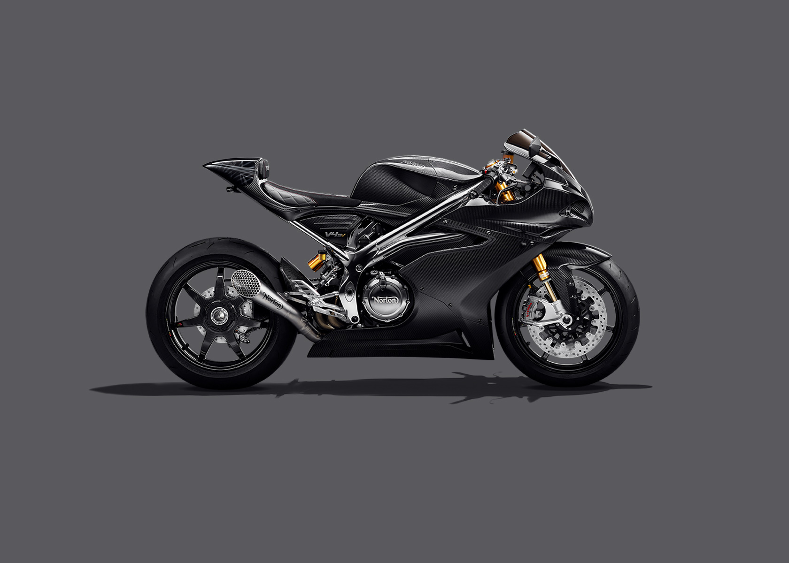
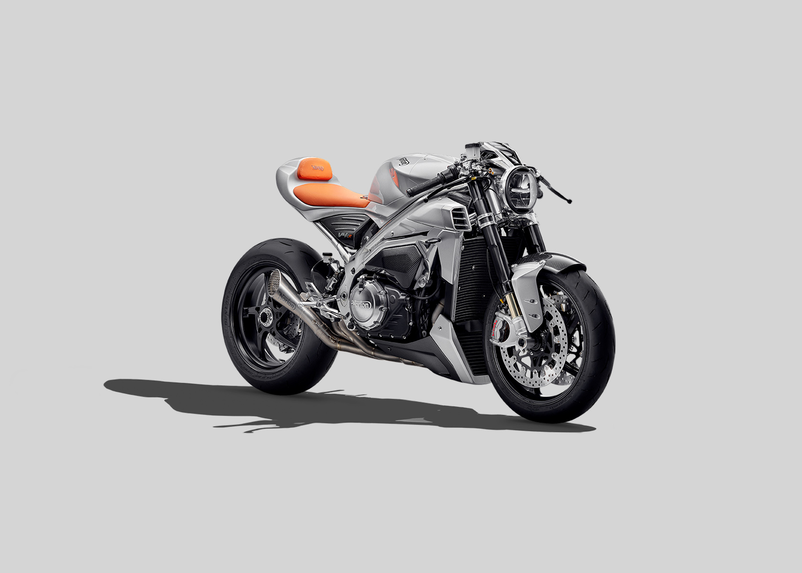
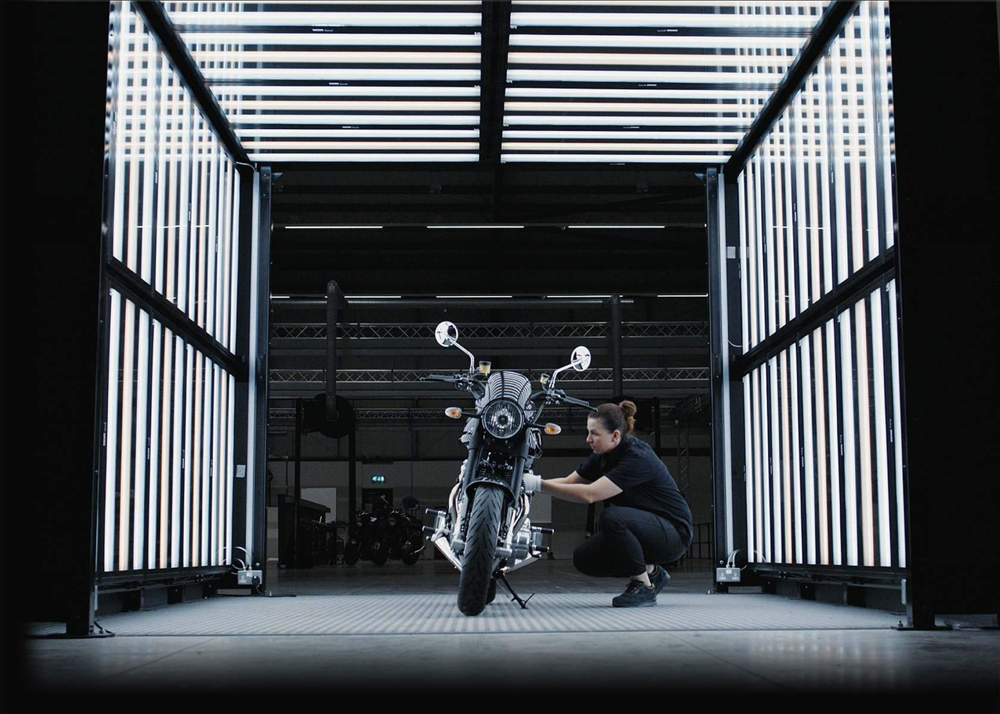

Ignite your nostalgia and create new memories with the new Norton Commando
961. More presence, more comfort, and more fun, this new edition will take you back to
simpler times.

The marque of something special
The new re-engineered V4SV is the most luxurious British superbike ever created.
The only British built and designed superbike in production. The speed, the handling, the feeling...
Nothing comes close to it. The Isle of Man TT is where the V4SV was imagined, the road is where it
was born.

Make space
The V4 Café Racer is the rebellious younger brother to the V4SV, sharing the same
superbike DNA but differing in attitude and emotion. It’s stripped-back fairing reveals Norton’s
technical artistry and craftmanship, naked with nothing to hide.

THE NORTON DIFFERENCE
Not all bikes are created equal.
Nortons stand apart. Nothing else looks like them or feels like them. It’s because Nortons
are built without compromise to be the most rewarding bike you can own.
Designed for agility, to fit closer, to feel better and react instinctively. Combining our
unique mix of industry-leading technology, innovation and craftsmanship, our bikes are assembled in
our state-of-the-art facility by passionate experts with quality at the forefront of everything we
do.
If you want more than just a motorcycle, you want a Norton.

MORE MODELS TO BE ANNOUNCED SOON
Guided by a design-led philosophy and quality assurance programme, we’re fine-tuning
our
range, finalising our long term product plan, and securing an indomitable future for Norton. We’re
working on the legend reimagined.
Stay tuned and be sure to check this page for updates.
THE RE-ENGINEERED V4SV - THE ULTIMATE BRITISH SUPERBIKE
We are excited to announce the launch of our re-engineered V4SV! Inspired by
Norton’s 100 years of racing prowess and success at the Isle of Man TT, the new V4SV will be the
only British designed and built superbike in production in the UK. The launch of the V4SV is a huge
milestone and yet it marks just the first step in our exciting plan for Norton…